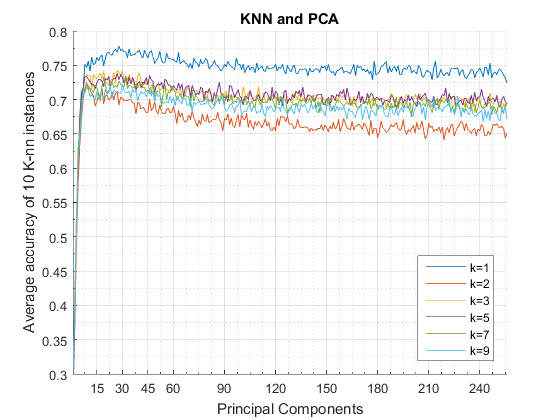

Task 2
Problem: Study the performance of a Nearest Neighbor classifier the number of the principal components increase to the full set.
Estimated time 10 Minutes
Contents
Loading Data
We import the data, then we split it in observations and classification.
tic;
data = importdata('semeion.data');
classification = data(:,end);
data = data(:,1:end-1);
Principal Component Analysis
coeff = pca(data);
K-NN Classification
We perform classification with six different k values. Each classification instance accuracy is the average of 10 instances trained according to the problem.
total_avg_accuracies = []; for k = [1 2 3:2:9] accuracy = []; avg_accuracies = []; % For 1 to 256 principal components for i = 1 : size(coeff,1) components = coeff(:,1:i); % Projection reduction = data * components; % 10 different training and test sets for j = 1:10 % Randomizing training set [training_set, test_set] = randomsamples(10,[reduction,classification]); mdl = fitcknn(training_set(:,1:i), training_set(:,end),'NumNeighbors',k); % Get the prediction prediction = predict(mdl, test_set(:,1:i)); accuracy =[accuracy ; sum(prediction == test_set(:,end))/size(test_set,1)]; end % Average accuracy of the 10 run avg = mean(accuracy); avg_accuracies =[avg_accuracies , avg]; accuracy = []; fprintf('k = %d, PC = %d, Avg = %f \n ',k,i, avg); end % Average accuracy foreach k total_avg_accuracies = [total_avg_accuracies; avg_accuracies]; end
k = 1, PC = 1, Avg = 0.265238 [...] Omitted debug [...]
Plot
% To skip the above phase (it takes 10 mins) uncomment the below line and run the section %load('task2.mat'); figure; hold on; for i = 1: size(total_avg_accuracies,1) plot(total_avg_accuracies(i,:)); end hold off; axis([1 256 0.3 0.8]); grid on; set(gca, 'xminortick','on'); set(gca, 'xminorgrid','on'); set(gca, 'xtick', [0:15:45 60:30:256] ); xlabel('Principal Components'); ylabel('Average accuracy of 10 K-nn instances'); set(gca, 'yminortick','on'); set(gca, 'yminorgrid','on'); legend('k=1','k=2','k=3','k=5','k=7','k=9', 'Location','southeast'); title('KNN and PCA'); toc;
Elapsed time is 691.493906 seconds.